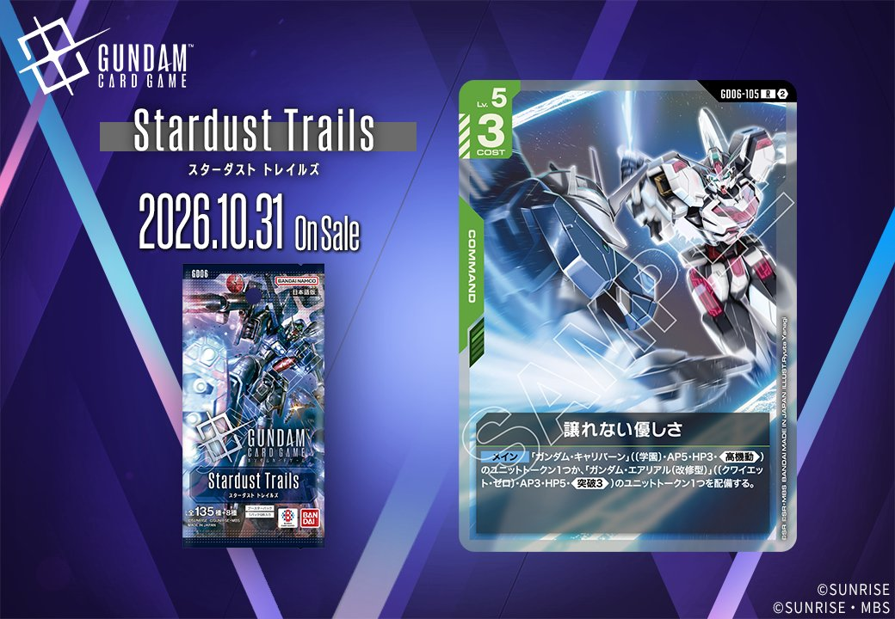
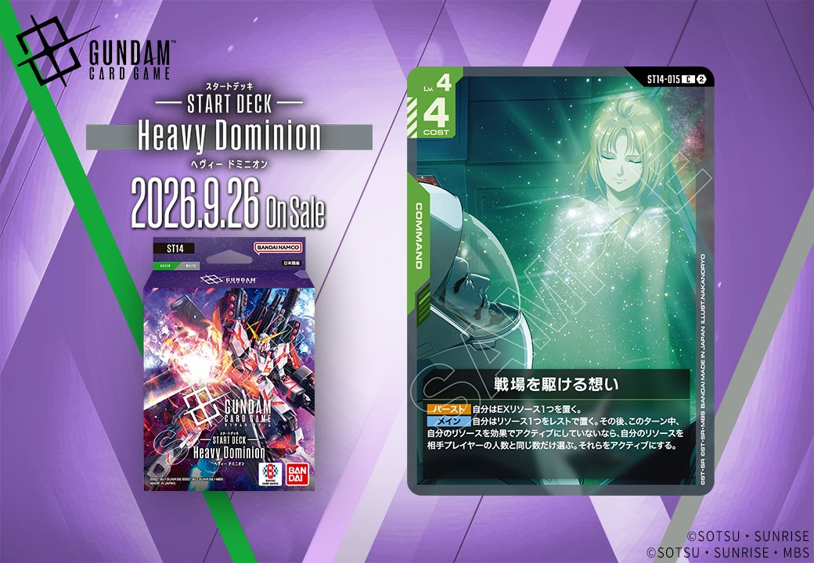

今回は緑のCOMMANDカード2枚を取り上げます。「譲れない優しさ」(GD06-105)は「GD06」に、「戦場を駆ける想い」(ST14-015)は「ST14」に収録されます。発売日はそれぞれ2026年10月31日、2026年9月26日です。

譲れない優しさ (GD06-105)
| 色 | 緑 | タイプ | COMMAND |
| Lv | 5 | コスト | 3 |
効果: メイン 「ガンダム・キャリバーン」(〔学園〕・AP5・HP3・《高機動》)のユニットトークン1つか、「ガンダム・エアリアル(改修型)」(〔クワイエット・ゼロ〕・AP3・HP5・《突破3》)のユニットトークン1つを配備する。
COST3のコマンドながら、AP5・HP3・《高機動》の「ガンダム・キャリバーン」か、AP3・HP5・《突破3》の「ガンダム・エアリアル(改修型)」のいずれかのユニットトークン1つを配備できる選択式の1枚。攻めなら《高機動》でブロックを回避、盤面で押すなら《突破3》のエアリアル(改修型)と、状況に応じて出し分けられる柔軟さが持ち味です。 コマンド1枚がそのままユニット1体分の盤面になるため、ザクⅡ(ST03-008)やリック・ドム(GD01-030)といった緑系ユニットで固める展開に無理なく組み込めます。発売は2026-10-31。

戦場を駆ける想い (ST14-015)
| 色 | 緑 | タイプ | COMMAND |
| Lv | 4 | コスト | 4 |
効果: 【バースト】自分はEXリソース1つを置く。【メイン】自分はリソース1つをレストで置く。その後、このターン中、自分のリソースを効果でアクティブにしていないなら、自分のリソースを相手プレイヤーの人数と同じ数だけ選ぶ。それらをアクティブにする。
戦場を駆ける想い(ST14-015)は、COST4のコマンドで【バースト】でEXリソース1つ、【メイン】でリソース1つをレストで置いた後、条件を満たせば相手プレイヤー人数分のリソースをアクティブにできる、リソース展開に特化した1枚です。実質的にレスト設置分を取り返せるため、後続の展開や別コマンド起動へ繋げやすい点が持ち味です。 リンクはなく、2026-09-26発売のST14に収録。バトルロワイヤル等の多人数戦ではアクティブ枚数が増える設計になっている点も押さえておきたい効果です。
関連カード
-
 ザクⅡ(ST03-008)緑系デッキ内採用率19% (888デッキ)
ザクⅡ(ST03-008)緑系デッキ内採用率19% (888デッキ) -
 リック・ドム(GD01-030)緑系デッキ内採用率18.2% (848デッキ)
リック・ドム(GD01-030)緑系デッキ内採用率18.2% (848デッキ) -
 ザクⅡ（シャア・アズナブル機）(ST03-006)緑系デッキ内採用率12% (560デッキ)
ザクⅡ（シャア・アズナブル機）(ST03-006)緑系デッキ内採用率12% (560デッキ) -
 ウイングガンダムゼロ(GD01-024)緑系デッキ内採用率11.4% (534デッキ)
ウイングガンダムゼロ(GD01-024)緑系デッキ内採用率11.4% (534デッキ) -
 ウイングガンダム(ST02-001)緑系デッキ内採用率11.2% (521デッキ)
ウイングガンダム(ST02-001)緑系デッキ内採用率11.2% (521デッキ)